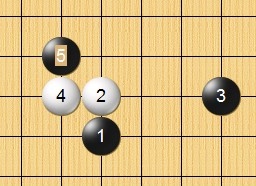
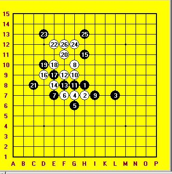
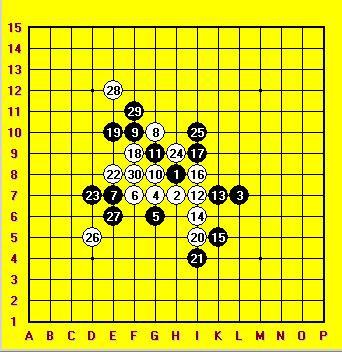
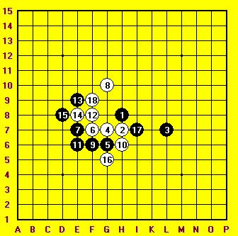
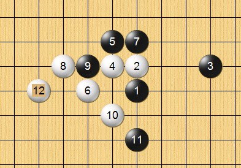

大残月第一题
#1 大残月第一题 作者：失落刀 发表时间：2008-11-5 20:41:05

求白胜。
#2 Re:大残月第一题 作者：失落刀 发表时间：2008-11-6 10:56:20
谢袜子指点。地毯中。#3 Re:大残月第一题 作者：wrwak 发表时间：2008-11-7 14:40:19
白8杀出一条血路
dl]#4 Re:大残月第一题 作者：潇洒 发表时间：2008-11-7 17:05:26
7反挡的没贴出来［ 失落刀 于 2008-11-7 20:55:53 时奖励此帖[金币加 20 威望加1］
#5 Re:大残月第一题 作者：袜子破个洞 发表时间：2008-11-7 17:08:28
正确走法6走4的左下。白必胜。不是很难。#6 Re:大残月第一题 作者：失落刀 发表时间：2008-11-7 22:25:05
袜子已经给了提示，爱好者自己拆拆吧。#7 Re:大残月第一题 作者：越狱行辕 发表时间：2008-11-9 0:15:13
失落刀俺对你有意见，你只发问题，解决了连答案都不发一份#8 Re:大残月第一题 作者：失落刀 发表时间：2008-11-9 16:17:28
 谢谢批评，加班中，回家后找找答案。
谢谢批评，加班中，回家后找找答案。
论坛欢迎各位发题目，
1.题目不要过大，最好具体（我自己做的就不好）。
2.题目不要变态难，不然打击大家信心哈。
3.题目不要变态简单，不然影响论坛声誉哈。
4.上面说的不作数，大家随意。
#9 Re:大残月第一题 作者：失落刀 发表时间：2008-11-10 14:08:06
#10 Re:Re:大残月第一题 作者：啊铭 发表时间：2008-11-12 11:18:07
引用：
原文由 wrwak 发表于 2008-11-7 14:40:19 :白8杀出一条血路
dl]
#11 Re:大残月第一题 作者：刀魂 发表时间：2009-3-15 2:01:33
呵呵，是不是用 都是用小黑 研究的啊。。。pf pf